Anthropic vient de lancer Claude Design, et c'est un outil extrêmement puissant, mais seulement si vous l'utilisez correctement. Donc dans cette vidéo, je vais vous expliquer exactement ce que c'est, comment il fonctionne, comment le configurer, et le maîtriser avant tout le monde. Vous allez obtenir tout ce qu'il vous faut pour commencer réellement à l'utiliser de la bonne manière dès le départ. Et donc, d'ici la fin de cette vidéo, vous en saurez plus sur Claude Design que 99 % des gens qui l'utilisent.
Interface & Outils : Interface de Claude Design
Contenu textuel & Code : Interface utilisateur de Claude Design avec prévisualisation graphique interactive et options d'édition.
Action / Démonstration : Présentation visuelle de l'outil Claude Design à l'écran.
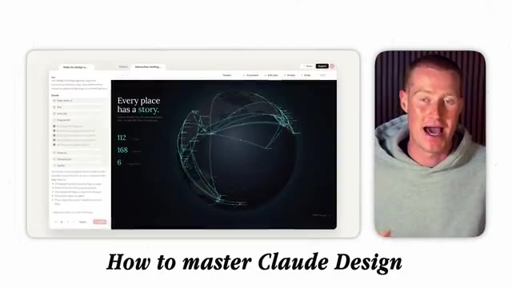
🔍 AgrandirAlors sans plus attendre, plongeons-nous dedans. Très bien, donc tout d'abord, parlons de ce qu'est même le nouvel outil de design Claude AI. Parlons-en donc dès maintenant avant de plonger en profondeur dans toutes les nouvelles fonctionnalités, comment vous pouvez commencer à les utiliser et quelques cas d'usage formidables différents que vous pouvez commencer à tester dès maintenant. Une chose clé que je tiens à noter très tôt dans cette vidéo est que c'est spécifique aux visuels et aux designs, et non aux applications web entièrement fonctionnelles.
Interface & Outils : Navigateur web affichant une page de présentation locale (HTML) et incrustation vidéo de la webcam.
Contenu textuel & Code : Texte affiché : "Anthropic's AI design tool" et trois blocs descriptifs sur "Claude Opus 4.7", "Visuals, not web apps" et "Reads your brand".
Action / Démonstration : Présentation et explication du nouvel outil de design Claude AI par le présentateur.
Donc si vous pensez à quelque chose comme Lovable, vous pouvez non seulement créer le design avec l'IA, mais vous pouvez aussi intégrer des bases de données spécifiques, des backends, collecter des paiements via Stripe, toutes ces différentes choses, et même héberger vos applications, applications web ou applications mobiles sur la plateforme. Ce n'est pas ce que fait cet outil de design par IA. Je voulais donc préciser cela avant d'aller plus loin. Ensuite, l'une des choses les plus cool à ce sujet, c'est qu'il a du contexte sur votre marque. Nous pouvons donc extraire votre style de votre base de code, de différents documents de marque que vous possédez, ou même de fichiers que vous avez sur votre ordinateur. Et vous vous demandez probablement, Brock, est-ce que j'ai accès à
Interface & Outils : Navigateur web affichant une page de présentation/diaporama (« Claude Design »).
Contenu textuel & Code : Texte explicatif sur l'outil d'IA d'Anthropic (« Anthropic's AI design tool ») avec des sections telles que « SCOPE: Visuals, not web apps » et « CONTEXT: Reads your brand ».
Action / Démonstration : Présentation des fonctionnalités et des limites d'un outil de conception graphique par l'IA.
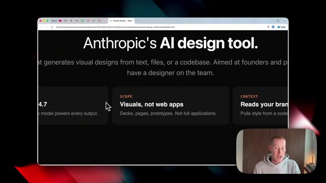
🔍 Agrandirceci. Je suis un utilisateur payant de Claude et voici la réponse rapide. C'est donc disponible sur tous les forfaits payants. Donc si vous êtes sur le forfait pro, qui coûte 20 dollars par mois, vous y aurez accès ainsi que sur le forfait max. Les utilisateurs des forfaits Claude Team et Enterprise devraient l'avoir dans leurs comptes dès aujourd'hui. Il y a donc quatre types de résultats différents que nous pouvons obtenir de l'agent de design de Claude. Laissez-moi donc les détailler dès maintenant. Nous pouvons lui donner une invite, par exemple, ou même télécharger une capture d'écran.
Interface & Outils : Navigateur web affichant une page de présentation des tarifs et forfaits Claude, avec la vidéo du présentateur en bas à droite.
Contenu textuel & Code : Texte indiquant "Available on every paid plan" et quatre blocs pour les forfaits : Claude Pro ($20/mo), Claude Max ($100-$200/mo), Claude Team ($25/seat), Enterprise.
Action / Démonstration : Le présentateur commente les différents abonnements payants de Claude permettant d'accéder aux fonctionnalités présentées.
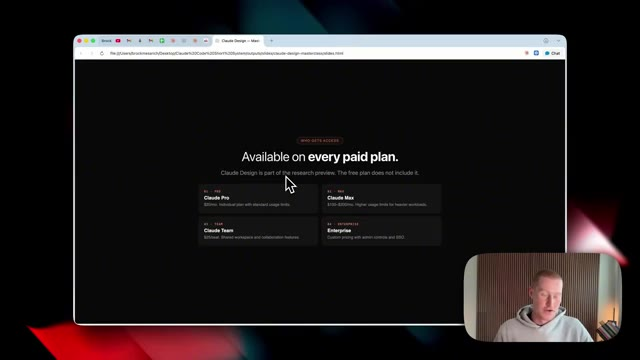
🔍 Agrandiril va passer par ce processus de conception et il pourrait générer des choses comme des présentations, des pages de destination, des documents d'une seule page, ce qui correspond fondamentalement à des choses comme des notes de synthèse, des résumés de présentation, ou différents rapports. Et nous pourrions même créer des maquettes visuelles et des prototypes d'une interface avant de commencer réellement à en écrire le code.
Interface & Outils : Navigateur web affichant une page HTML locale de présentation (Claude Design).
Contenu textuel & Code : Schéma illustrant le processus 'The Magic Moment of Claude Design' avec quatre types de sorties : Slide decks, Landing pages, One-pagers et Prototypes.
Action / Démonstration : Le présentateur explique les différents types de formats générés par l'outil de conception IA.
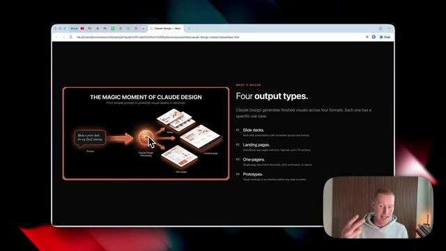
🔍 AgrandirTrès bien, assez bavardé, passons directement à ce nouvel outil de design. Donc, pour y accéder, vous devez vous rendre sur claude.ai sur le Web. Il y aura un lien dans la description pour le faire. Donc, si vous avez votre compte et que vous êtes un utilisateur pro ou supérieur, vous devriez maintenant voir ceci sur le côté gauche de votre écran. Si vous ne le voyez pas, assurez-vous d'ouvrir la barre latérale.
Interface & Outils : Navigateur web affichant l'interface de Claude AI (claude.ai)
Contenu textuel & Code : Page d'accueil de Claude avec la barre de recherche/prompt centrale ("Type / for skills"), le message "Afternoon, brock", et le menu latéral avec les options Chats, Projects, Artifacts, Code et Design.
Action / Démonstration : Navigation sur le site web de Claude pour présenter l'accès à l'outil de design.
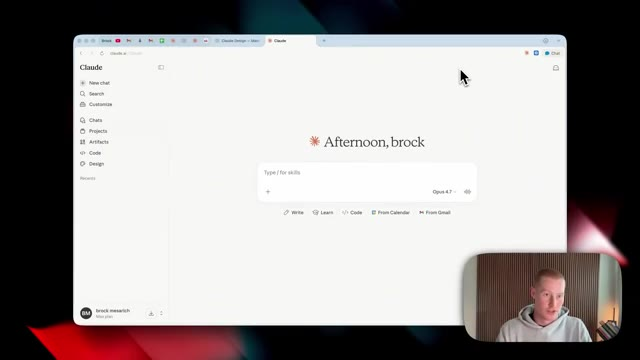
🔍 AgrandirVous le trouverez directement sous le bouton de code Claude. Donc si je clique dessus, nous verrons ensuite notre nouvelle interface juste ici. Laissez-moi vous faire une brève visite de la plateforme de conception Claude et de l'interface afin que vous puissiez avoir une idée de ce qu'elle peut faire. Et ensuite, nous allons plonger plus en profondeur dans chacune de ces fonctionnalités. Ne vous inquiétez donc pas pour cela. Tout d'abord, nous avons notre onglet récent ici.
Interface & Outils : Interface web de Claude Design par Anthropic Labs affichée dans un navigateur.
Contenu textuel & Code : Tableau de bord avec des projets récents tels que "Learn about Claude Design", "AI for Non-Techies Design System", et "Design System".
Action / Démonstration : Présentation et navigation guidée à travers l'interface utilisateur de la plateforme de conception Claude.
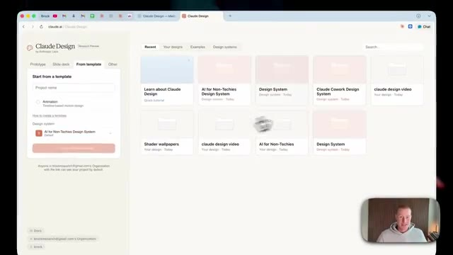
🔍 Agrandir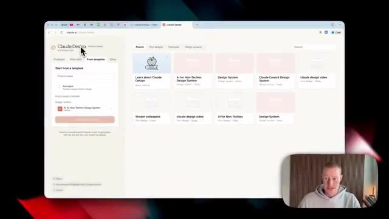
🔍 AgrandirC'est fondamentalement ici que nous allons voir tous nos différents designs. J'en ai quelques-uns différents ici. Nous pourrions voir nos designs. Nous avons différents exemples, qui sont fondamentalement des modèles préexistants que vous pourriez utiliser. Et vous pourriez cliquer sur ce bouton "utiliser ce prompt", et il commencera réellement à coder cela pour vous et reproduira fondamentalement exactement ce que vous voyez ici.
Interface & Outils : Claude Design (interface web)
Contenu textuel & Code : Galerie de projets, modèles de design, options de création (Prototype, Slide deck, From template).
Action / Démonstration : Navigation à travers les différents designs et exemples de modèles préexistants dans l'interface.
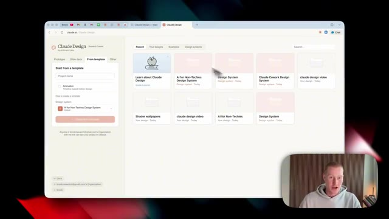
🔍 Agrandir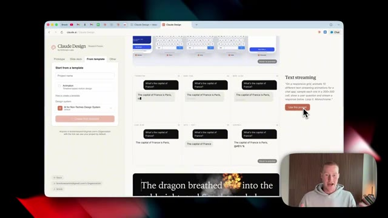
🔍 AgrandirSi vous avez déjà utilisé une plateforme comme 21st.dev, vous pouviez fondamentalement copier des composants d'interface utilisateur et copier le code et les invites derrière ceux-ci. Et c'est une idée très similaire. C'est un peu comme un répertoire de différents composants d'interface utilisateur que vous pourriez utiliser. Ensuite, dans cette barre de menu, nous avons des systèmes de design. Et c'est quelque chose dont je vais parler beaucoup plus dans cette vidéo.
Interface & Outils : Navigateur web affichant l'interface de Claude Design par Anthropic Labs.
Contenu textuel & Code : Modèles de composants d'interface utilisateur, prompts textuels associés et aperçus visuels interactifs.
Action / Démonstration : Navigation et présentation des différents modèles et composants d'interface utilisateur disponibles sur la plateforme.
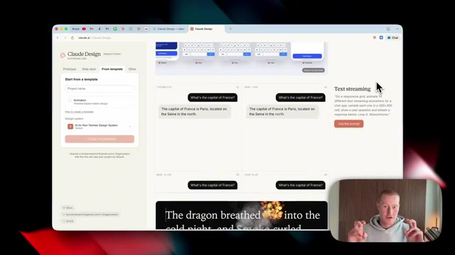
🔍 Agrandir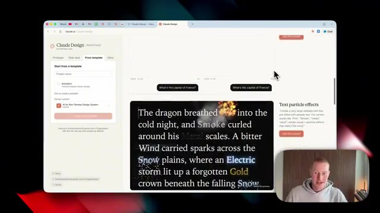
🔍 Agrandir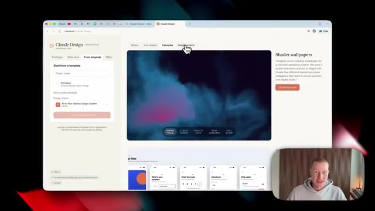
🔍 AgrandirEt c'est là que ça devient vraiment, vraiment intéressant et où cet outil peut devenir très puissant si vous l'utilisez correctement. Je vais donc approfondir ce sujet plus tard dans cette vidéo. Assurez-vous donc de rester jusqu'à la fin. Très bien. Je veux donc parler maintenant des différentes entrées que nous pouvons réellement donner à notre agent de conception Cloud. Il existe donc de nombreux formats de documents différents que nous pouvons réellement télécharger sur notre agent Cloud.
Interface & Outils : Navigateur web affichant l'application Claude Design et une page de présentation HTML locale.
Contenu textuel & Code : Paramètres de systèmes de design ("AI for Non-Techies Design System") et description des formats acceptés (DOCX, PPTX, XLSX).
Action / Démonstration : Navigation dans l'interface de l'outil Claude Design pour présenter les options de configuration et les fonctionnalités.
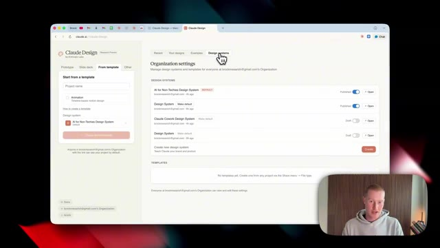
🔍 Agrandir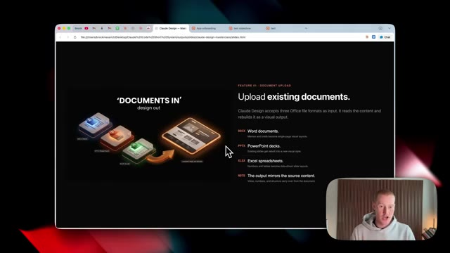
🔍 AgrandirTout d'abord, nous pouvons télécharger des documents Word, deuxièmement, des documents PowerPoint, des feuilles de calcul Excel, tous ces différents formats peuvent être téléchargés directement sur notre agent de design Cloud. Pour vous montrer exactement ce que je veux dire, laissez-moi ouvrir un projet ici. Et ce que je vais faire, c'est que je vais prendre ce document PDF, qui est essentiellement un guide sur la façon d'utiliser la nouvelle application de bureau Cloud Code.
Interface & Outils : Navigateur web, interface de l'outil de design Claude AI. [DESC_IMAGE_1] Page de présentation listant les formats acceptés (Word, PowerPoint, Excel) et les règles de sortie visuelle. [DESC_IMAGE_2] Options de contexte de l'outil de design ("Start with context", "Design System", "Add screenshot"). [DESC_IMAGE_3] Manipulation des fenêtres du bureau avec l'application Claude et des icônes de fichiers.
Contenu textuel & Code : Explications orales des stratégies et mise en contexte méthodologique du marché.
Action / Démonstration : Le présentateur explique et montre les différents formats de fichiers acceptés et l'interface de l'agent de design.
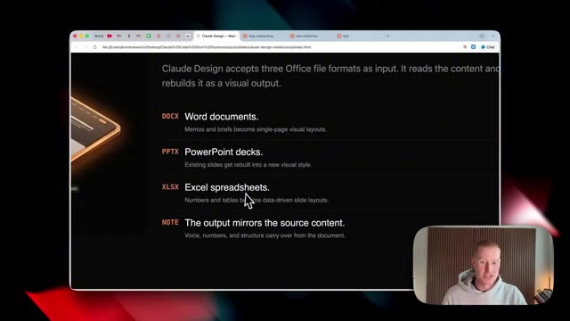
🔍 Agrandir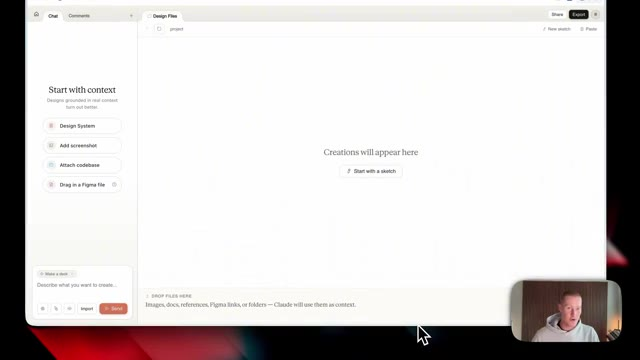
🔍 Agrandir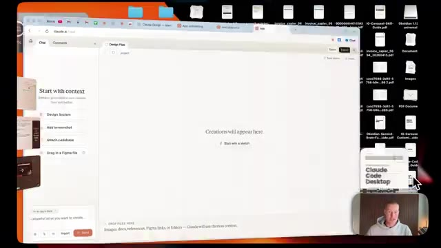
🔍 AgrandirJ'adore vraiment le design de ceci. Je trouve que ça a l'air vraiment solide. J'aimerais donc essayer de recréer ce style exact. Ce que je pourrais faire maintenant, c'est revenir à mon application de design défectueuse et je pourrais simplement faire glisser ceci et télécharger ce PDF. Nous pouvons maintenant voir qu'un PDF est joint ici ainsi qu'à l'intérieur de nos fichiers de design. Et puis je vais juste dire, je veux que tu transformes ceci en une présentation de diapositives dans le style exact de ce PDF ici.
Interface & Outils : Application de design web (interface de type Claude AI / outil de création de design).
Contenu textuel & Code : Options de contexte (« Start with context », « Design System », « Add screenshot ») et zone de dépôt de fichiers.
Action / Démonstration : Glisser-déposer d'un fichier PDF dans l'interface de design pour l'utiliser comme référence de style.
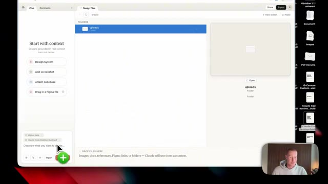
🔍 Agrandir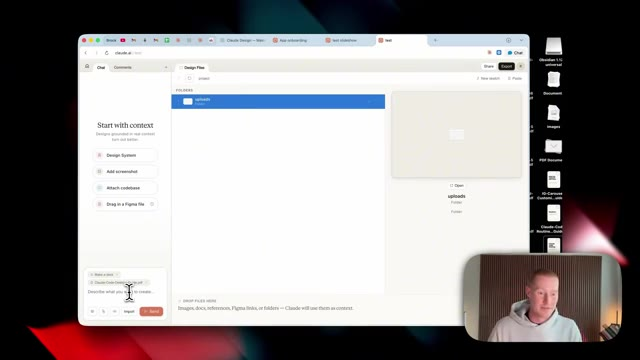
🔍 AgrandirJe veux que tu crées des infographies qui ressemblent aussi beaucoup aux graphiques montrés dans le PDF. Comme ça, je pourrais l'envoyer. Et encore une fois, si nous avons des feuilles de calcul Excel spécifiques, par exemple, nous pourrions les télécharger directement ici et ensuite les transformer en prototype d'application ou peut-être en présentation ou quelque chose comme ça, sans que nous ayons à reformater cela et fondamentalement à le télécharger sous forme de texte, par exemple.
Interface & Outils : Navigateur web affichant l'interface de Claude.ai avec un espace de travail de design de fichiers et une vidéo du présentateur en incrustation.
Contenu textuel & Code : Prompt utilisateur demandant la création d'un diaporama et d'infographies au même style qu'un PDF joint, avec affichage d'un script en cours d'exécution par l'IA.
Action / Démonstration : Le présentateur démontre l'utilisation de Claude pour analyser un document PDF et générer automatiquement des présentations ou infographies au style correspondant.
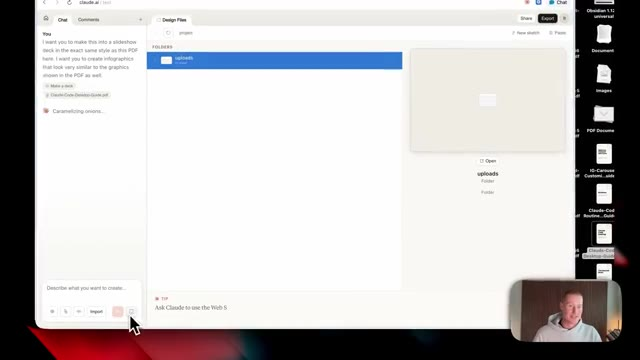
🔍 Agrandir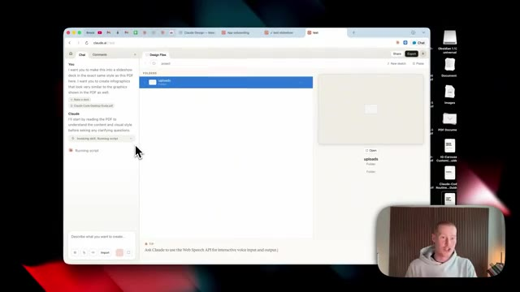
🔍 AgrandirTrès bien. Et quelques minutes plus tard, nous avons maintenant ce diaporama ici, Cloud Code Desktop. Cela ressemble beaucoup au PDF que nous avons téléchargé. Le fond a l'air un peu plus jaune, j'ai l'impression, mais c'est vraiment solide. Et un point essentiel à noter ici, c'est qu'il a pris toutes les informations de ce PDF existant que je lui ai fourni, et tout est affiché directement à l'intérieur.
Interface & Outils : Navigateur web affichant l'interface de création de diapositives Claude.ai avec une webcam du présentateur en bas à droite.
Contenu textuel & Code : Présentation de diapositives professionnelles au design épuré sur l'application Claude Code Desktop, avec texte explicatif et panneaux d'édition latéraux.
Action / Démonstration : Navigation et présentation visuelle des diapositives de Claude Code Desktop par le créateur.
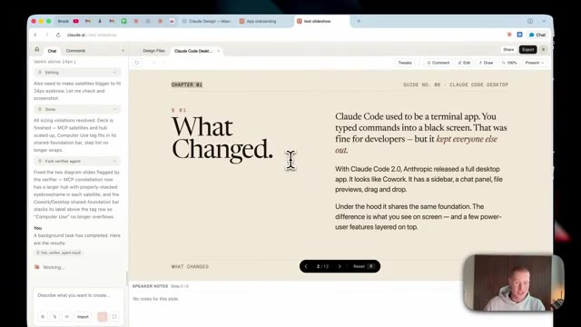
🔍 Agrandir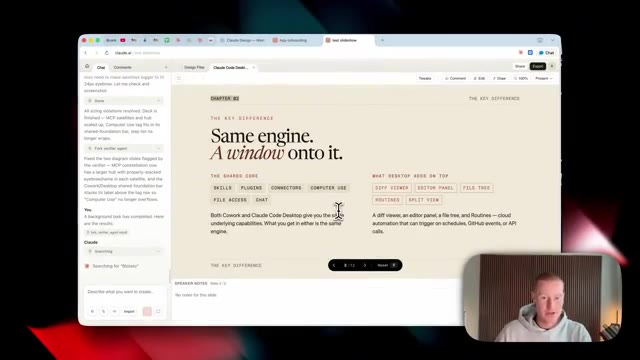
🔍 AgrandirDonc, vous pourriez voir les serveurs MCP. Il y a ce petit graphique sympa, un autre graphique ici. Je veux dire, c'est plutôt solide pour un tableur que j'ai créé en un seul prompt, et je lui ai juste donné une image de référence, et il a été capable de recréer un style similaire. Je viens de vous montrer comment créer un diaporama, mais ce n'est pas la seule chose que nous pouvons faire ici. C'est beaucoup plus puissant que ça.
Interface & Outils : Interface web de Claude Design par Anthropic Labs.
Contenu textuel & Code : Projets de design, wireframes, prototypes de diapositives et notes de génération par IA.
Action / Démonstration : Navigation et démonstration de la création de présentations et de designs de diapositives via l'interface de Claude.
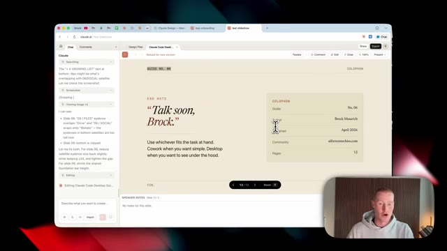
🔍 Agrandir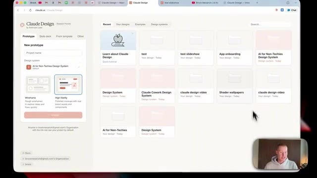
🔍 AgrandirDonc je vais vous montrer comment créer un prototype d'application mobile directement à l'intérieur de la plateforme de conception Claude ici. Donc ce que je pourrais faire, c'est simplement venir ici et lui donner un nom. Appelons simplement cela application mobile. Il y a quelques distinctions clés et choses que je veux mentionner ici, c'est que nous pouvons sélectionner notre système de design. En ce moment, j'ai sélectionné le système de design AI for non-techies, mais pour ce cas d'utilisation, je vais sélectionner aucun. Et encore une fois, je vais vous montrer comment créer votre propre système de design ici juste après cette petite démo rapide. Il y a quelques choses différentes que nous pouvons sélectionner.
Interface & Outils : Navigateur web affichant Claude Design par Anthropic (claude.ai/design).
Contenu textuel & Code : Panneau de création de nouveau prototype avec un champ de saisie de texte "Project name", des options de design system (Wireframe ou High fidelity), et divers projets récents affichés sous forme de vignettes (Learn about Claude Design, test, App onboarding, etc.).
Action / Démonstration : Le présentateur s'apprête à nommer un nouveau prototype d'application mobile dans l'interface de Claude Design.
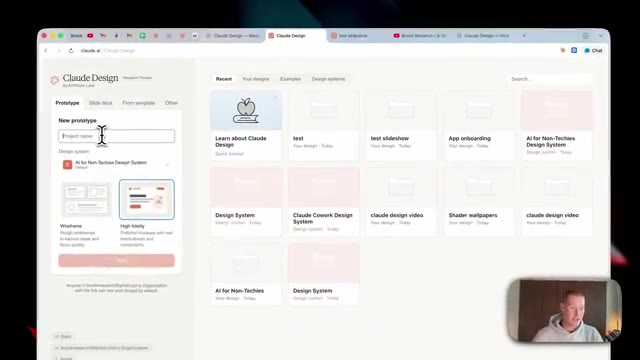
🔍 AgrandirNous pouvons cliquer sur les wireframes, qui sont en fait de simples wireframes approximatifs pour explorer rapidement différentes idées et parcours. Donc, si nous voulons en quelque sorte travailler sur le modèle ou le cadre de notre site web avant de vraiment finaliser le design et de passer plus de temps à le concevoir, nous pouvons sélectionner ceci ou nous pouvons sélectionner la haute fidélité, ce qui va réellement créer ces maquettes plus soignées que vous avez probablement envie de créer.
Interface & Outils : Navigateur web affichant l'interface de Claude Design (Claude.ai) avec une vue des projets récents et un panneau latéral de configuration de prototype.
Contenu textuel & Code : Options de création de prototype avec choix du type de design system et sélection entre l'option Wireframe (pour explorer rapidement des idées) et High fidelity (maquettes polies).
Action / Démonstration : Le présentateur survole et clique sur les options de prototype (Wireframe et High fidelity) dans l'interface de Claude Design.
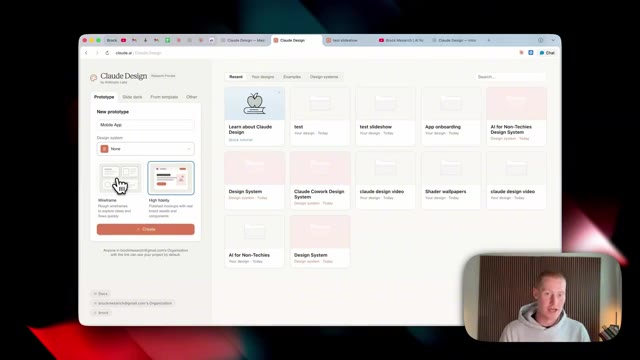
🔍 Agrandir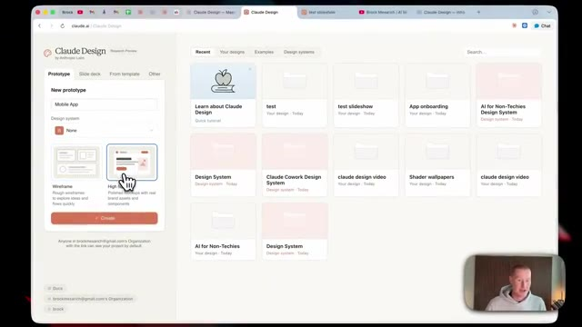
🔍 AgrandirDonc je vais cliquer sur ce bouton de création et cela va maintenant m'emmener vers cette interface. Ça ressemble beaucoup à Lovable. Quelques petites différences. Je peux ouvrir des systèmes de design. Je peux ajouter une capture d'écran et je peux même y attacher une base de code, ce qui est plutôt cool. Donc si nous utilisons GitHub, par exemple, je pourrais cliquer ici ou je peux simplement télécharger un dossier depuis mon bureau contenant tout mon code, et il peut extraire tout cela pour le transformer ensuite en prototype fonctionnel.
Interface & Outils : Interface web de Claude Design / Lovable.
Contenu textuel & Code : Options de contexte : Design System, Add screenshot, Attach codebase, Drag in a Figma file, et la fenêtre modale de téléchargement de code.
Action / Démonstration : Navigation dans l'interface et sélection de l'option pour attacher une base de code.
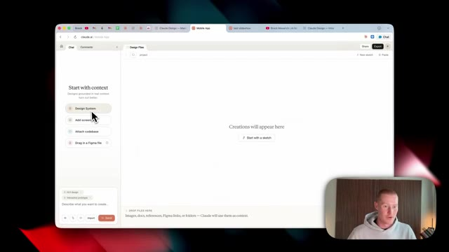
🔍 Agrandir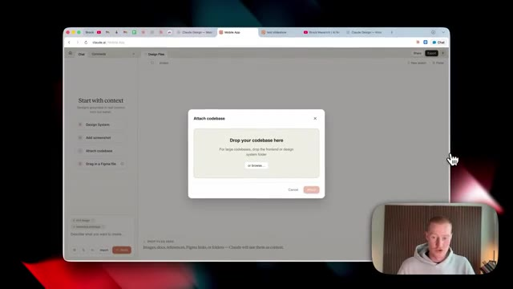
🔍 AgrandirJe vais simplement lui donner cette invite très simple. Donc, créez un parcours d'inscription iOS pour une application de vélos en libre-service, affichez les écrans sur un canevas. C'est donc une invite vraiment, vraiment simple. Je vais donc lui donner ceci et ensuite je vais vous montrer ce que cela va générer ici dans une seconde. Pendant que cela charge, je veux parler de quelques points clés. Nous avons donc ce bouton de commentaires ici même. Et c'est parce que la nouvelle application Claude Design est conçue pour collaborer avec votre équipe.
Interface & Outils : Navigateur web affichant Claude AI (claude.ai) et son interface de design/canevas de projet.
Contenu textuel & Code : Prompt utilisateur : "Create a simple iOS signup flow for a bikesharing app. Show screens on a canvas. Blue + orange modern color scheme." et fichiers JSX générés.
Action / Démonstration : Saisie d'un prompt textuel pour générer des interfaces mobiles et visualisation des composants générés dans l'espace de travail.
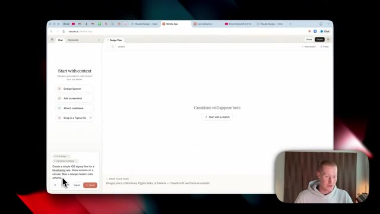
🔍 Agrandir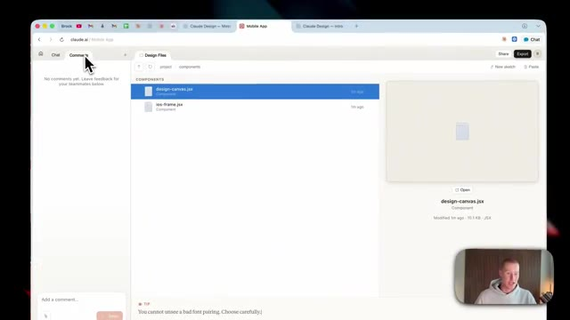
🔍 AgrandirDisons que quelqu'un dans votre équipe apporte une modification à notre application. Vous pourriez laisser différents commentaires ici et dire simplement, hé, c'est nul. Par exemple, nous pourrions l'envoyer. Et maintenant, tout le monde dans notre équipe peut voir tous ces différents commentaires que nous faisons sur ce projet spécifique. Et puis une autre chose, c'est que nous avons un bouton de partage ici. Nous pourrions donc donner un nom à ceci et donner un accès spécifique à nos coéquipiers.
Interface & Outils : Interface web de Claude AI (section design de projet et gestion des commentaires).
Contenu textuel & Code : Composants de fichiers (design-canvas.jsx, ios-frame.jsx, screens.jsx) et panneau latéral de commentaires. [DESC_IMAGE_3] Un utilisateur rédige et soumet un commentaire sur un composant avant d'ouvrir le menu de partage pour l'équipe.
Action / Démonstration : Explications face caméra et analyse conceptuelle des marchés.
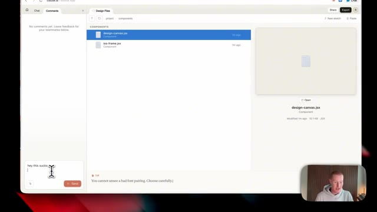
🔍 Agrandir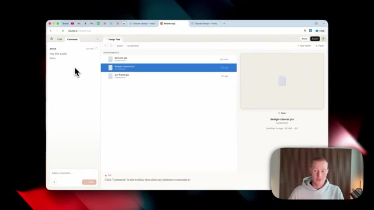
🔍 Agrandir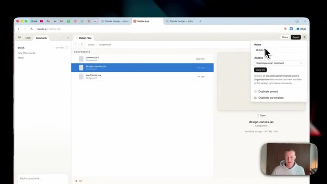
🔍 AgrandirDonc nous pouvons leur permettre de le voir, nous pouvons leur permettre de le commenter, et nous pouvons leur permettre de l'éditer, ou nous pouvons garder ceci comme privé. Donc nous pourrions aller de l'avant et faire cela, copier le lien, et nous pourrions même dupliquer ceci comme un projet spécifique ou comme un modèle. À tout moment, je pourrais ouvrir notre onglet de fichiers de conception juste ici et voir tous les différents composants que nous avons à l'intérieur de ce prototype.
Interface & Outils : Interface web de Claude.ai (Claude Design).
Contenu textuel & Code : Options de gestion des accès utilisateurs, copie de lien et duplication de projets.
Action / Démonstration : Configuration des permissions de partage du projet et navigation dans l'arborescence des fichiers.
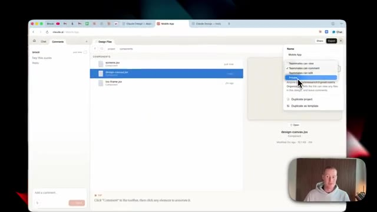
🔍 Agrandir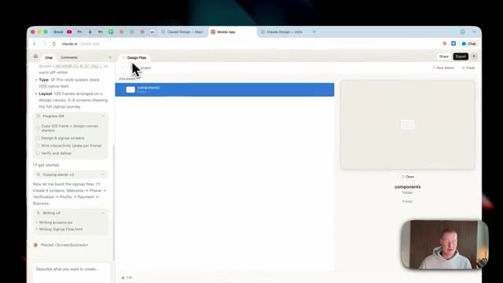
🔍 AgrandirDonc, si j'ouvre ceci, il y a quelques éléments différents là-dedans, ainsi que toutes les pages qui sont générées, que nous pouvons également visualiser juste ici. Ensuite, si je clique sur ce fichier HTML de flux d'inscription, nous pouvons maintenant voir cette interface utilisateur pour notre application. Cela a l'air plutôt solide. Ce n'est vraiment pas ce qui se fait de mieux, mais je lui ai donné une consigne très, très simple.
Interface & Outils : Interface web de Claude.ai affichant un projet de conception d'application mobile (Mobile App).
Contenu textuel & Code : Fichiers du projet (composants, design-canvas, ios-frame, screens, Signup-Flow.html) et écrans maquettés d'une application mobile (« loop »).
Action / Démonstration : Navigation et clic sur le fichier HTML du flux d'inscription pour visualiser les maquettes et le prototype interactif.
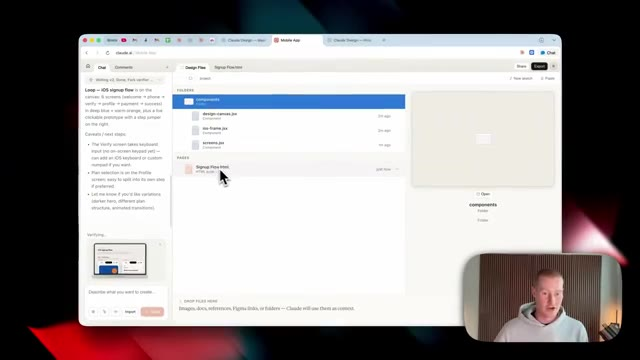
🔍 Agrandir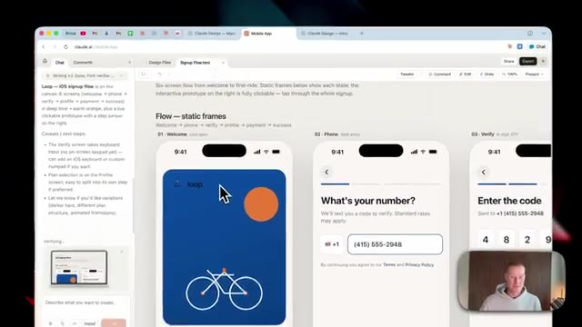
🔍 Agrandir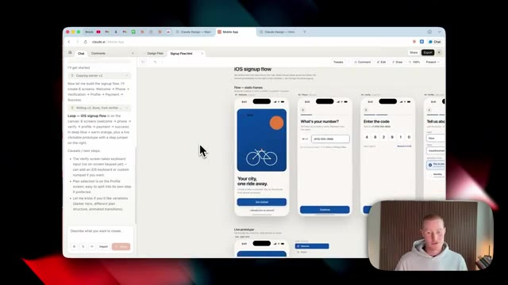
🔍 AgrandirEn gros, ça résume à quoi sert cette application. Ça montre le parcours. Donc nous avons notre page de bienvenue. Nous avons notre page d'inscription. C'est plutôt cool. Et à partir d'ici, nous pouvons faire plusieurs choses différentes. Évidemment, nous pourrions revenir sur le côté gauche et faire des modifications directement ici. Ou nous pourrions modifier des éléments spécifiques directement. Donc disons que je veux changer le texte juste ici.
Interface & Outils : Navigateur web affichant l'interface de prototypage Claude AI / design d'application mobile avec encart vidéo du présentateur en bas à droite.
Contenu textuel & Code : Maquettes d'écrans mobiles pour une application de vélo en libre-service (flux d'inscription, saisie du numéro de téléphone, code de vérification, profil et paiement).
Action / Démonstration : Navigation et présentation du parcours utilisateur (signup flow) généré par l'intelligence artificielle sur le canvas.
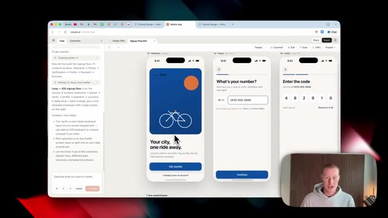
🔍 Agrandir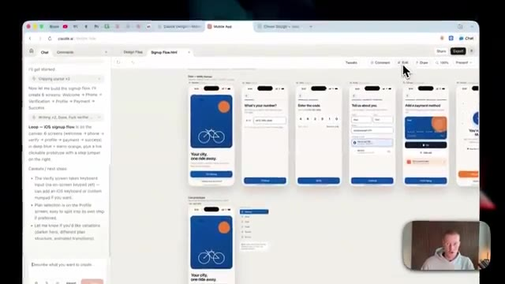
🔍 AgrandirJe pourrais simplement modifier le texte. Ou je pourrais sélectionner n'importe quel autre élément et en changer la couleur spécifique, par exemple. Ou je pourrais même sélectionner l'option de dessin et dessiner sur notre toile et apporter toutes les modifications que nous voulons. Comme par exemple, laissez-moi juste faire comme ça et barrer ce vélo avec une croix. Ensuite, fondamentalement, cela irait de l'avant et examinerait cela, puis supprimerait le vélo, par exemple.
Interface & Outils : Interface web de prototypage (Claude AI / outil de design)
Contenu textuel & Code : Maquettes de téléphones portables affichant un parcours utilisateur (iOS signup flow) avec des éléments textuels et graphiques.
Action / Démonstration : Modification d'éléments visuels et utilisation de l'outil de dessin pour annoter le prototype directement sur la toile.
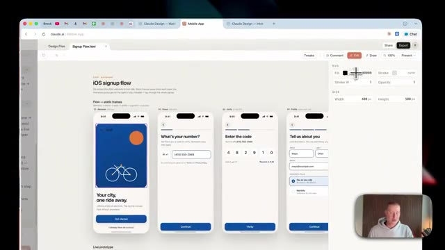
🔍 Agrandir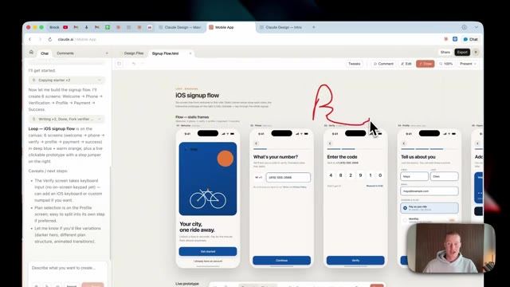
🔍 Agrandir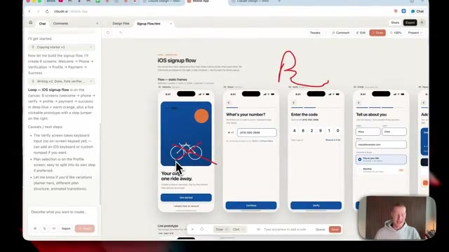
🔍 AgrandirDonc, si vous voulez modifier vos prototypes ou vos designs simplement en dessinant sur ce canevas, vous pouvez le faire. Cela donne vraiment une impression très similaire à un autre produit de design appelé Google Stitch. Si vous connaissez cela, ça crée de superbes interfaces utilisateur que vous pouvez ensuite exporter vers CloudCode ou AntiGravity, n'importe laquelle de ces autres plateformes de codage. Donc, ça donne une impression assez similaire à ça, mais honnêtement, ça n'a pas cette même sensation de haute qualité que Stitch possède, je dois bien l'avouer.
Interface & Outils : Google Stitch et navigateur web présentant des diapositives de design.
Contenu textuel & Code : Maquettes d'interfaces utilisateur (UI/UX), texte descriptif de design, panneaux de génération et options de style.
Action / Démonstration : Navigation et présentation des fonctionnalités de design itératif sur Google Stitch.
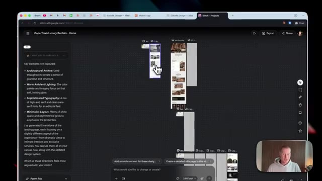
🔍 Agrandir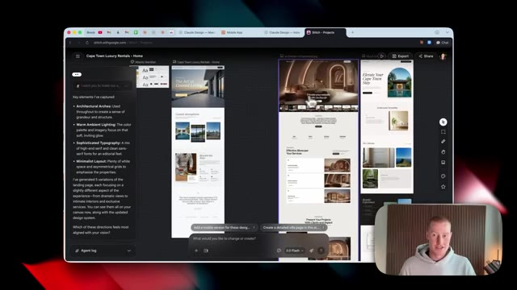
🔍 Agrandir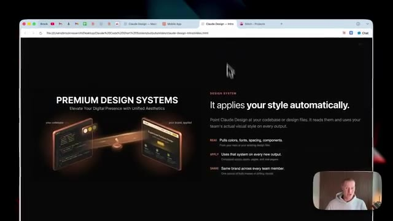
🔍 AgrandirEnsuite, ce que nous pourrions faire si nous sommes satisfaits de ce design, par exemple, nous pourrions venir et cliquer sur exporter. Et il y a plusieurs façons différentes de l'exporter. Nous pouvons télécharger ce projet sous forme de fichier zip. Nous pourrions l'exporter au format PDF, en document PowerPoint. Nous pourrions l'envoyer directement sur Canva pour y apporter d'autres modifications, l'exporter sous forme de fichier HTML autonome, ou nous pouvons le transmettre à Claude Code pour commencer à le transformer en une application entièrement fonctionnelle. Parce qu'actuellement, ce n'est qu'un prototype. Je ne peux pas venir ici et réellement tester l'application pour voir si elle fonctionne correctement. Ce n'est qu'un outil de conception pour l'instant. D'accord, tout cela est formidable. Mais ce sur quoi je veux me concentrer,
Interface & Outils : Interface web de Claude.ai et maquettes d'application mobile (prototypage).
Contenu textuel & Code : Maquettes d'écrans d'application mobile (flux d'inscription) et options d'exportation (télécharger en zip, PDF, PPTX, HTML, etc.).
Action / Démonstration : Démonstration du menu d'exportation et des différentes options de téléchargement du projet design.
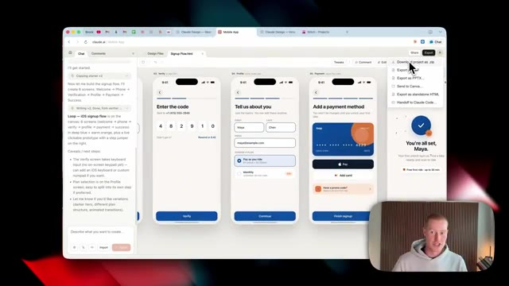
🔍 Agrandirparce que c'est l'un des éléments clés ici qui rend ce produit très intéressant. La fonctionnalité de système de design est vraiment, vraiment cool. Je vais donc détailler cela dès maintenant. C'est donc une façon d'apprendre à Claude Design notre style exact automatiquement. Et le truc génial là-dedans, c'est que nous n'avons pas besoin de fournir un prompt super complet pour concevoir et créer ce système de design.
Interface & Outils : Navigateur web affichant une page de présentation de design (slides HTML).
Contenu textuel & Code : Titre principal « PREMIUM DESIGN SYSTEMS » et sous-titre « It applies your style automatically. Point Claude Design at your codebase or design files... ».
Action / Démonstration : Le présentateur explique la fonctionnalité de système de design permettant d'appliquer automatiquement le style visuel.
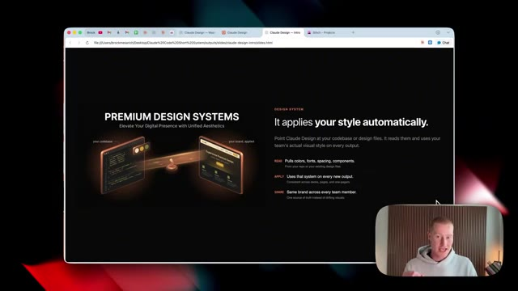
🔍 AgrandirNous pouvons concevoir cela en faisant quelques choses différentes. Nous pouvons pointer Claude Design vers notre base de code ou vers des fichiers de conception spécifiques qui se trouvent sur notre ordinateur. Il peut les lire et utilisera réellement ces visuels provenant de ces différentes sources directement dans ce style qu'il va créer. Il va donc lire et extraire différentes couleurs, différentes polices, la typographie, et différents composants, et appliquera ce système à absolument chaque résultat.
Interface & Outils : Navigateur web affichant une page HTML de présentation sur les systèmes de design (Claude Design).
Contenu textuel & Code : Texte explicatif et sections relatives aux méthodes d'intégration du design (Website, Brand Kit, Deck ou doc, Codebase).
Action / Démonstration : Navigation et survol du texte explicatif de la page web par le présentateur.
Considérez cela comme un fichier MD de design, pour ainsi dire, où chaque fois que nous générons un prototype, il utilisera toujours ce style spécifique. Et il y a quatre façons spécifiques dont nous pourrions lui enseigner notre style. Nous n'avons pas besoin d'avoir une base de code si nous n'en avons pas déjà une. Ce que nous pourrions faire, c'est insérer l'URL d'un site web spécifique. Donc, qu'il s'agisse de votre site web ou d'un site web que nous voulons recréer, nous pourrions insérer un kit de marque qui contient différents logos et polices directement stockés dans un dossier spécifique.
Interface & Outils : Navigateur web affichant une page de présentation de design system (Claude Design - Intro).
Contenu textuel & Code : Texte explicatif sur l'application automatique du style (Read, Apply, Share) et les fonctionnalités de lecture des couleurs, polices et composants.
Action / Démonstration : Présentation visuelle d'un système de design automatisé appliqué aux prototypes.
Nous pourrions lui donner une présentation ou un document. Et comme je l'ai dit, nous pourrions extraire directement de notre base de code qui est stockée dans un dépôt tel que GitHub. Maintenant, afin d'en concevoir un, nous revenons à Claude Design et cliquons sur ce bouton qui indique systèmes de design. Juste ici, j'en ai quelques-uns que j'ai créés avant de faire cette vidéo. J'ai mon système de design AI for non-techies, et c'est mon système par défaut.
Interface & Outils : Navigateur web affichant l'interface de l'application Claude Design (claude.ai) et une page explicative sur les design systems.
Contenu textuel & Code : Texte descriptif des méthodes de configuration de style (Website, Brand Kit, Design Files, Codebase) et liste des design systems de l'organisation.
Action / Démonstration : Navigation sur l'interface de Claude Design et survol de l'onglet des systèmes de design.
Donc nous pourrions fondamentalement choisir un système par défaut. Donc chaque fois que nous générons quelque chose, il utilisera automatiquement ce style. Donc si j'ouvre ceci, nous pourrions examiner exactement à quoi cela ressemble. Donc nous avons tous nos dossiers ici avec nos différentes icônes d'application, nos maquettes de logo. Fondamentalement, chaque composant d'interface utilisateur que nous utilisons à l'intérieur de ce style de conception sera stocké juste ici.
Interface & Outils : Interface web de Claude Design / Claude AI
Contenu textuel & Code : Dossiers de projet, fichiers SVG d'icônes, aperçus HTML et instructions de design system.
Action / Démonstration : Navigation dans les dossiers de ressources du projet et visualisation des différents éléments graphiques.
Ensuite, si je fais apparaître ceci, voici un exemple de page de destination que j'ai créée pour ma communauté scolaire en utilisant ce style de design exact que j'ai élaboré. Et ça a l'air plutôt solide. J'ai fondamentalement essayé de recréer le style, la typographie et les couleurs d'Anthropic et de Claude, vous savez. Ça a l'air plutôt cool. Mais laissez-moi vous montrer maintenant comment vous pourriez fabriquer exactement la même chose.
Interface & Outils : Navigateur web, interface Claude.ai (Artefacts / LandingPage.html).
Contenu textuel & Code : Page web responsive style Anthropic avec typographie soignée, palette de couleurs sombres et orangées, et panneau latéral de discussion (chat).
Action / Démonstration : Présentation et défilement d'une page de destination générée et conçue pour une communauté en ligne.
Si nous revenons à nos systèmes de design, nous pourrions juste en créer un nouveau ici même. Et ce que nous allons faire maintenant, c'est faire plusieurs choses différentes. Nous allons lui donner un nom. Laissez-moi donc appeler ceci Claude Design, et nous pourrions lier notre code depuis GitHub si nous avons du code spécifique que nous voulons référencer. Nous pourrions glisser des dossiers spécifiques directement ici. Et en plus de tout cela, nous pourrions télécharger n'importe quels logos, polices ou actifs spécifiques directement en bas et ajouter toutes autres notes.
Interface & Outils : Navigateur web sur l'application claude.ai (Interface de configuration de Design System).
Contenu textuel & Code : Formulaire de configuration "Set up your design system" comprenant le nom "Claude Design", des options pour lier GitHub ("Link code on GitHub"), importer du code local, et téléverser des fichiers .fig ou des assets graphiques.
Action / Démonstration : Saisie du nom "Claude Design" dans le champ de configuration du système de design et présentation des options de liaison avec GitHub.
Personnellement, je vais récupérer quelques fichiers pour télécharger en quelque sorte le style que je recherche. Et ensuite, je vais vous montrer exactement comment il recrée cela. C'est donc mon tableau de bord de compétences que j'ai créé. J'aime vraiment l'apparence de ceci. Je pense que la typographie, le style, c'est vraiment très propre. J'aime vraiment ça. Je veux donc copier ceci directement. C'est un fichier HTML qui est stocké sur mon ordinateur que j'utilise à l'intérieur de Claude.
Interface & Outils : Navigateur web affichant une interface utilisateur personnalisée (Claude AI / tableau de bord de compétences).
Contenu textuel & Code : Cartes de fonctionnalités/compétences pour la création de contenu (Angle, Approve Carousel, Batch, Checkin, Claude Trending, etc.). [DESC_IMAGE_3] Navigation et visualisation du tableau de bord de compétences du présentateur.
Action / Démonstration : Le présentateur présente et commente son tableau de bord de compétences personnalisé.
Donc, laissez-moi juste aller récupérer ce fichier spécifique sur mon ordinateur et le déposer là comme référence. Voici le dossier que je vais copier et ramener dans Claude. Ensuite, je vais cliquer sur parcourir, ouvrir ceci. Et maintenant, nous avons notre dossier du tableau de bord des compétences stocké juste ici. Ensuite, je vais juste cliquer sur continuer la génération. Et apparemment, cela prendra environ 15 minutes.
Interface & Outils : macOS Finder et navigateur web sur l'interface de Claude (claude.ai).
Contenu textuel & Code : Explorateur de fichiers et interface de configuration de projet avec liaison de dossier local.
Action / Démonstration : Sélection et importation d'un dossier local (« skill-dashboard ») dans l'interface de Claude.
Alors laissons-le faire son travail. C'est donc là que les choses deviennent vraiment intéressantes, parce qu'en ce moment même, Claude est toujours en train de travailler comme c'est indiqué juste ici, mais nous pourrions commencer à donner des retours sur le travail qu'il a fait jusqu'à présent. Et c'est ainsi que nous sommes en mesure de concevoir les directives de marque exactes que nous voulons créer. Et nous pourrions le faire en passant en revue chacun de ces éléments individuels qui nécessitent une révision.
Interface & Outils : Navigateur web affichant l'interface de Claude (claude.ai) et la section 'Design System'.
Contenu textuel & Code : Étapes de génération textuelles, sections 'Review draft design system', 'README', 'Type' et 'Colors'.
Action / Démonstration : Navigation et survol des éléments générés pour examiner le travail en cours de l'agent IA.
Par exemple, nous avons ce "read me" juste ici, qui explique pour ainsi dire comment ce système fonctionne. Nous pourrions aller de l'avant et cliquer sur "ça a l'air bien", ou nous pourrions ajouter "nécessite du travail" et donner des commentaires là-dessus. Je vais cliquer sur "ça a l'air bien". Ça me montre les couleurs Bedrock ici. Je vais parcourir tout ça assez rapidement. D'après ce qu'on peut voir, elles ont l'air plutôt bien. Et nous pourrions toujours revenir en arrière et les changer si nous le voulons.
Interface & Outils : Claude.ai (outil web de révision et génération de Design System / Artefacts AI).
Contenu textuel & Code : Document de Design System généré par Claude, section README, cartes de palette de couleurs ("Paper colors" avec hex #faf3ef, #f5ede4, #f7e1e7, #e8ddd0), options de feedback ("Looks good" / "Needs work").
Action / Démonstration : Évaluation et validation interactive ("Looks good") des composants d'un Design System généré par l'IA.
Par exemple, voici à quoi ressemblera notre section principale. Ça a l'air super bien. Notre échelle d'affichage, la police du corps de texte, genre tout ça, c'est des trucs dont je ne comprends même pas vraiment ce que c'est, mais je trouve que ça a l'air bien. Et si jamais on veut faire des modifications, je peux juste venir ici, cliquer sur « à retravailler », décrire ce qu'on veut changer, et ça l'ajoutera directement à la file d'attente sur le côté gauche où Claude s'en occupe et crée ça pour nous.
Interface & Outils : Navigateur web affichant l'interface Claude AI (claude.ai) et le système de design généré.
Contenu textuel & Code : Éléments de design d'interface utilisateur (UI kit), échelles de typographie, affichage de composants graphiques et panneaux de configuration de design.
Action / Démonstration : Le présentateur passe en revue et commente les éléments du système de design générés par l'IA, notamment l'échelle d'affichage et l'espacement.
Et environ 15 minutes plus tard, nous avons notre système de design conçu et je peux cliquer sur les fichiers de design. Juste ici se trouvent en gros tous ces fichiers, directement à l'intérieur de ce système. Nous avons notre document de compétences, notre fichier skill MD, que nous pouvons tout à fait modifier si nous le voulons. Nous pouvons simplement apporter n'importe quelle modification directement ici. Mais ce que je veux faire maintenant, c'est juste cliquer sur publier et je peux en faire mon système de design par défaut.
Interface & Outils : Navigateur web affichant l'interface de claude.ai (Claude Design System) avec webcam du présentateur en bas à droite.
Contenu textuel & Code : Fichiers du système de design, dossiers (assets, preview, ui_kits), feuilles de style (colors_and_type.css) et documents de compétences (SKILL.md, README.md).
Action / Démonstration : Navigation à travers les fichiers du système de design et ouverture d'un document markdown (SKILL.md).
Maintenant, la question que vous vous posez probablement, c'est : comment utiliser ce système de design ? Comment le déclencher ? Et c'est très simple. Chaque fois que nous venons créer un prototype, un diaporama ou un modèle spécifique, nous pouvons toujours spécifier quel système de design nous voulons utiliser. Le système de design de Claude est celui que nous venons juste de créer. Laissez-moi donc essayer cela maintenant. Disons que je veux créer une présentation.
Interface & Outils : Navigateur web affichant l'interface de Claude Design (claude.ai/Claude Design).
Contenu textuel & Code : Menu de création de prototype avec les options de nom de projet, sélection du système de design (Claude Design System), et choix entre Wireframe et High fidelity.
Action / Démonstration : Navigation et présentation des options de création de prototypes et de sélection du système de design dans l'interface.
Je pourrais simplement commencer ici, sélectionner mon système de design et ensuite dire, je veux que vous créiez une présentation sur les nouvelles routines de code Claude qui viennent de sortir. Je vais donc simplement envoyer cela et maintenant il va commencer à construire ce diaporama pour moi. C'est plutôt cool. Notre agent de design Claude va nous poser deux ou trois questions différentes sur ce dont nous voulons parler dans ce diaporama.
Interface & Outils : Interface web de Claude.ai / outil de génération de présentations
Contenu textuel & Code : Prompt utilisateur demandant un diaporama sur les nouvelles routines Claude Code, options de système de design et questions de configuration de l'IA (audience, durée, ton, angle).
Action / Démonstration : Sélection du système de design, envoi du prompt et affichage des questions de clarification par l'assistant IA.
Donc je pourrais tout à fait pré-sélectionner tout ça. Disons que je veux que ce soit un exposé de 15 minutes. Je pourrais essentiellement décomposer toutes ces différentes choses. Disons que c'est un aperçu d'annonce de produit. Je vais donc simplement avancer avec quelques-unes de ces différentes spécifications et ensuite voir ce que cela crée réellement. Très bien, c'est parti. Voici notre diaporama avec exactement le même design.
Interface & Outils : Navigateur web affichant l'interface de Claude AI avec un panneau latéral de configuration et une webcam du présentateur en bas à droite.
Contenu textuel & Code : Formulaire de questions interactif pour configurer une présentation (audience, durée de 15 minutes, angle de l'exposé, ton et style des titres de diapositives) et panneau de suivi des tâches de génération.
Action / Démonstration : Le présentateur configure les paramètres de la présentation en ajustant la durée de l'exposé et en sélectionnant les options de l'outil d'IA.
Ça a l'air très similaire. Si vous regardez ceci, ça a l'air plutôt identique. Honnêtement, la typographie est très similaire. Nous avons même ce logo Claude qui tourne. J'ai pu récupérer ça parce qu'il regarde en fait le code qui a été écrit pour ce site HTML et le reconstruit et construit à partir de là. Donc si je parcours rapidement ceci, tout a l'air super solide.
Interface & Outils : Navigateur web affichant des pages HTML locales et des interfaces web de design.
Contenu textuel & Code : Interface utilisateur avec typographie stylisée, logo Claude, statistiques et métriques de compétences (78 total, 11 skills, 67 commands).
Action / Démonstration : Navigation et présentation de code HTML reconstruit affichant un tableau de bord de compétences et de routines.
Évidemment, c'est exactement dans ce même style. Et encore une fois, si nous voulons y apporter des modifications, nous le pouvons tout à fait. Mais à mes yeux, cela passe la liste de contrôle du style de design. Et je suis vraiment content de ça. Ensuite, à partir d'ici, nous pourrions exporter ceci pratiquement partout où nous le voudrions. Nous pourrions l'exporter sous forme de PDF, d'URL partageable, de document PowerPoint. Nous pourrions même le prendre et l'importer dans Canva, ou sur un site HTML autonome.
Interface & Outils : Navigateur web affichant l'interface de Claude et des présentations de slides.
Contenu textuel & Code : Schémas d'écosystème, options d'exportation (PDF, URL, PPTX, Canva, HTML, Code) et textes de présentation.
Action / Démonstration : Présentation des fonctionnalités d'export et de l'écosystème de design Claude.
Et nous pourrions même l'envoyer à Claude Code et commencer à en faire une application entièrement fonctionnelle ou un site web spécifique, et même l'héberger sur quelque chose comme Vercel. Donc les gars, voilà le nouveau design de Claude qui vient de sortir. Si vous voulez plus de contenu comme celui-ci, abonnez-vous à la chaîne YouTube. Si vous souhaitez obtenir les 50 compétences Claude que j'use et j'abuse chaque jour, ainsi que rejoindre des entrepreneurs qui utilisent Claude et Claude Cowork au quotidien dans leur entreprise, alors assurez-vous de rejoindre ma communauté School. Il y a un lien dans la description pour le faire. Mais cela étant dit, les gars, merci d'avoir regardé jusqu'à la fin et je vous vois dans la prochaine vidéo.
Interface & Outils : Navigateur web affichant des fichiers HTML locaux (pages de présentation et sites web générés).
Contenu textuel & Code : Interface utilisateur de sites web modernes avec des éléments textuels, des boutons de téléchargement et des compteurs de compétences.
Action / Démonstration : Navigation et présentation des interfaces web et des diagrammes d'écosystème de design.